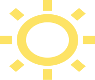

About me
I am a creative Web Designer & Artist that provides branding, web & visual solutions to institutions, startups, agencies with a needs-first focus that provides a pragmatic yet unique angle in the creation of all my visual projects.
My Story
I was born in Caracas, Venezuela in the 90s, an interesting time where the transitions from the physical to the digital starting taking its roots in the country, and with both parents all involved in this new wave, I became very early interested in computers and how they worked.
Fast tracking through my youth I became my second interest flourished in the arts, especially drawing and painting, and when it came time to decide for a career, I decided to combine my 2 passions by pursuing graphic design, where I could use technology and visual techniques to shape the appearance of the world.
Currently I am in the process of transitioning into being and front-end developer and web designer. I hope that my humble experience can be a good fit for you and your company.
What I Know + Can Do
| Web design: HTML5 + CSS3 - Javascript - PHP - SQL | Collaboration - Receptive - Pragmatic |
| Empathy - Listener - Adaptive | Graphic Design: Branding - Stationary - Adobe - Editorial |
| Misc: English & Spanish speaking - 3D modeling - Painting | Learner - Client-Oriented |
| Hard Skills | Soft Skills |
My Process
| Recompile as much client and necessary information as possible and synthetize it into key rules and parameters for the project. | Form, based on the previous research, ideas in textual and visual form such as flow maps and sketches to select the most optimal solution to the project to design. | Use digital tools to develop and design the project, using the research and selected concept as the base and the use of feedback and testing as an iterating force. | The final step can be simple changes based on client feedback or a iterating process that might start from the beginning in order to develop quality results. |
Frequently Asked Questions
Why work with me?
At times it is hard to work with agencies when they provide you with their targeted, powerful solutions that still don’t get your needs as a business. Working with me your business and brand goals will always come first and center of all the design choices.
What considerations should the client have with pricing?
All pricing is based on current market rates based on my experience and value I can provide to you, meaning that an initial inquiry and discovery is, for the most part, necessary to provide anyone with an accurate price model, with it also comes choices such as upscaling or downscaling your needs based on your financial realities.
How is your process with clients?
In the conversation phase, I establish the client’s needs, parameters and considerations important for a successful communication through the project, with this done, I continue with the steps 1 to 3 in my design process: Research, Conceptualize and Design but, before arriving at the polish phase, I communicate and deliver a documentation regarding the results of the project, subject for the clients approval, after said approval or feedback, I proceed to complete the project on the Polish phase.
What size of companies can you work for?
Being a single person in this brand for now, my capabilities are limited mostly for individual brands as well as small and medium sized businesses.
Considerations with a client before working with you?
Understanding what you business really needs is important, even though we can discover this through conversation, the limits on what marketing and web design can do is making your business work, the success of such ultimately depends on knowing what you want to do (this is especially important for startups).